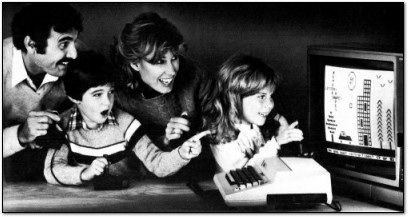

Meetings
This section includes all the 'after-action' reports of the Games Creators Club weekly meetings.
Meetings are held in the evenings at Kenilworth School during term time. The club currently has members from Year 7 to Year 11. If you are a student at Kenilworth School and you would be keen to join, let your form tutor know and they can put you in touch with the organisers.
Alternatively, you can follow along with the meetings and content using the articles posted here.
GCC Restarts This Week (Feb 24 2016)
- Details
- Published on Tuesday, 23 February 2016 11:32
- Written by Edward Powell
- Hits: 317
Lets get the second half of this term underway with a bit of game coding! I’ll be starting a Python Crash Course (or ‘Refresher’, depending on your perspective) for those who are new to the club, preparing for their GCSE project, or would just like to brush up on their skills.
For everyone else, there is still plenty of interesting stuff to do on building your game levels or extending the game engine for YumikosAdventure. I’ve noticed a couple of people have branched the github repository, so I’m interested to see what you have been up to over the half-term break. See you there. E
GCC 2016 is here!
- Details
- Published on Tuesday, 12 January 2016 08:16
- Written by Edward Powell
- Hits: 336
The first session of the New Year will be this Wednesday:
Wednesday 13 January @ 7-8pm
We hope you all had a great Christmas break with plenty of coding and gadgets to tell us about when you get there. We are planning a very cool tiled-map based game this term using the excellent Tiled map editor. If you want to get a bit of a head start, you should take a look at http://www.mapeditor.org/ and there is an tutorial video here: https://www.youtube.com/watch?v=ZwaomOYGuYo
GCC is Back This Wednesday!
- Details
- Published on Monday, 02 November 2015 10:45
- Written by Edward Powell
- Hits: 432
Everything is up an running with shiny new versions of Python, pygame and our other game dev tools. Make sure you join us for 7-8pm in L24. We’ll start the term off with a bit of retro-gaming on the RPi’s for a bit of fun and inspiration. Nick is working hard on a brand new game framework for us to work through and we’ll also be making extensive use of Codeacademy this term to hone our python and javascript game coding skills.
Don’t forget to bring along your own laptops and Pi’s if you want, and we’re looking forward to seeing what projects you’ve been up to over the break. See you there! E
No Games Creators Club again this week :(
- Details
- Published on Tuesday, 22 September 2015 19:41
- Written by Edward Powell
- Hits: 441
There will be no session this week on Wednesday 23 or 30 September due to on-going difficulties with the computer lab & the school open evening. We *hope* that normal service will resume soon, currently we're aiming for:
Wednesday 7 October– 7-8pm.
But watch this space please…
Sorry about the delay in getting back up an running.
Welcome back to Games Creators Computer Club 2015-16!
- Details
- Published on Monday, 14 September 2015 09:11
- Written by Edward Powell
- Hits: 438
It’s
been all change in the computer lab over the summer, so we can look
forward to a big update to the computers we use at the club. We’re still
waiting to hear when this work will be complete and our games tools
will be ready to roll again, so unfortunately there won’t be a club session this week (no session on Wednesday 16 September). But watch this space and we’ll have things underway as soon as we can. Lots of new, fun and interesting stuff ahead…